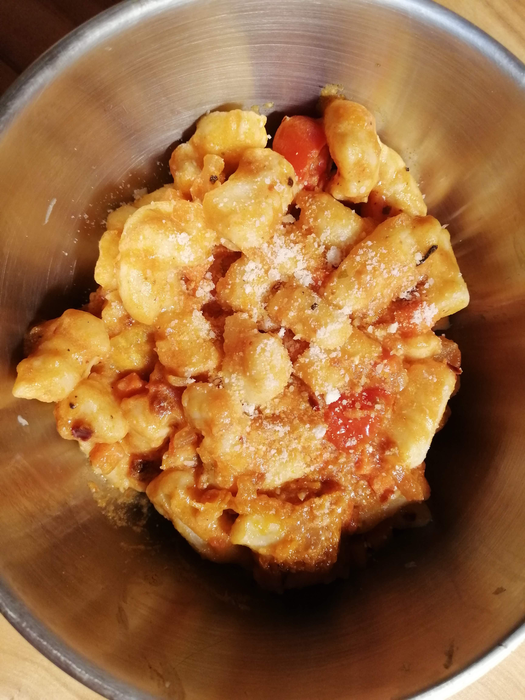

Dorm-made Gnocchi

Description
Easy gnocchi recipe with a spicy creamy tomato sauce, with roasted pumpkins, carrots and tomatoes. Get ready for a trip to flav city from the comforts of your own dorm room! Makes one serving.
Ingredients
Pasta
- AP flour
- 1 Potato
- 1 Egg
- Salt and Pepper
- Parmesan, if you're fancy!
Sauce
- Tomato sauce from a jar, duh
- 1/2 a aarrot
- 1 tomato
- Leftover roast pumpkin if you have any
- Parmesan powder
- Chili flakes
- Salt and Pepper
Steps
- Heat your potato until soft in the crusty microwave of the common area, and then mash it with the only fork you own.
- Combine with beaten egg and appropriate amount of flour until a kneadable ball of dough forms.
- Season dough with salt and pepper, and parmesan.
- Play with dough and contemplate your existence as a college student. Skip if you have already done so for lunch to preserve your mental health.
- Form little bits of dough, roughly the lenth of one-third of your forefinger. No need for perfection. Cooking is chill.
- For the sauce, toast carrots and diced tomato on stove until soft, and then add jar of sauce to the consistency of your liking.
- Season sauce with parmesan powder, chili flakes, and salt and pepper.
- Boil gnocchi for 3 minutes in salted water, drench in sauce and serve!